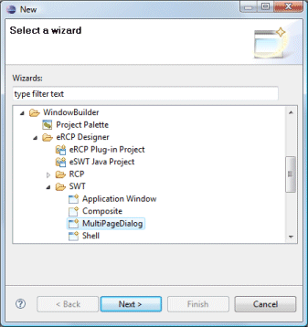
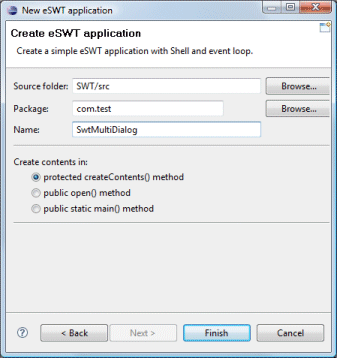

|
Subclasses of the SWT MultiPageDialog class can be
created using the SWT MultiPageDialog wizard. The wizard can be
selected from the drop down WindowBuilder wizard menu or from the
Eclipse New wizard.
To use the wizard, select the project source folder and package to contain the class. Then enter the class name and hit the Finish button.   The wizard generates the following code including a main() method. ... When editing SWT MultiPageDialogs, all of the standard SWT layouts, containers, widgets and menus are available. Custom or third party controls may be added via the Choose Component command. |